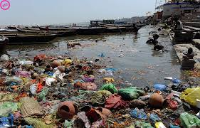
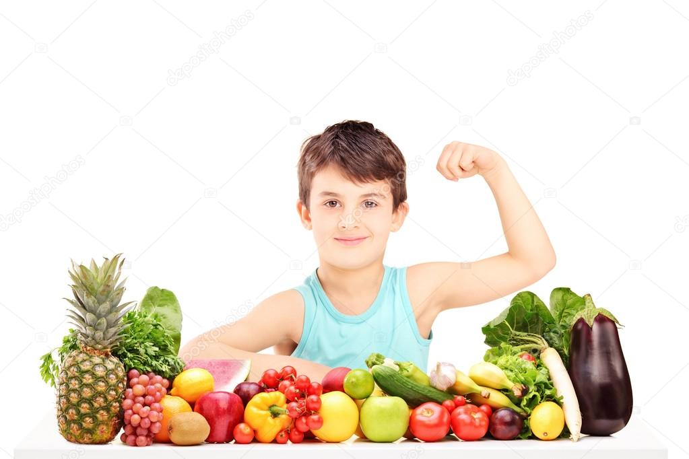
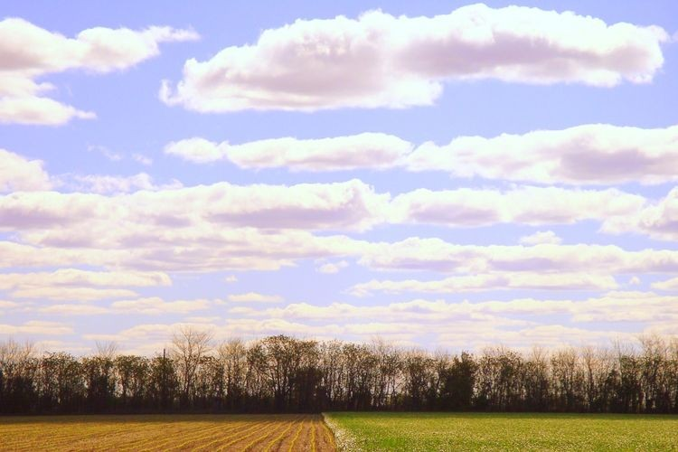
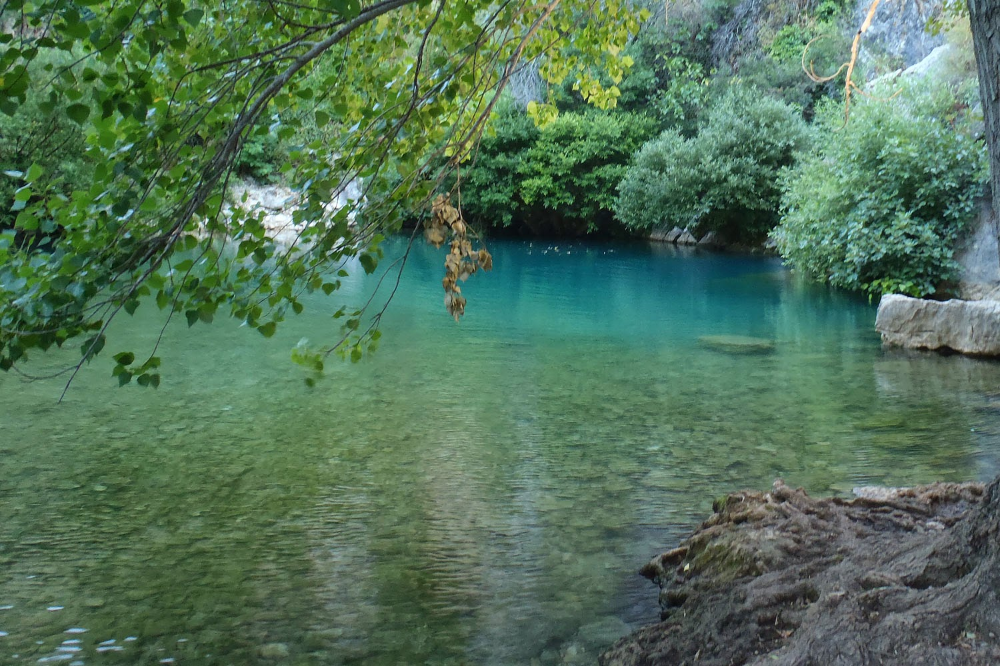

Contaminacion

La contaminación es la presencia o acumulación de sustancias en el medio ambiente que afectan negativamente el entorno y las condiciones de vida, así como la salud o la higiene de los seres vivos. Con este significado también se suele utilizar el concepto de contaminación ambiental.
Como contaminación también se denomina una alteración en una sustancia o un producto, como un alimento o una muestra. Por ejemplo: “La contaminación de las muestras obligó a los científicos a recoger nuevas muestras.
Contaminación también significa contagio o transmisión de una enfermedad. Por ejemplo: “Te he contaminado mi virus”.
Esta palabra procede del latín contaminatĭo, contaminatiōnis, que se deriva del verbo contamināre, que significa ‘corromper, ensuciar o alterar por el contacto’.

Existen diferentes tipos de contaminación dependiendo del ámbito en que se produzcan las alteraciones de las condiciones normales para la vida.
.jpg)
.jpg)
El reciclaje es un proceso cuyo objetivo es convertir desechos en nuevos productos o en materia para su posterior utilización. Gracias al reciclaje se previene el desuso de materiales potencialmente útiles, se reduce el consumo de nueva materia prima, además de reducir el uso de energía, la contaminación del aire (a través de la incineración) y del agua (a través de los vertederos), así como también disminuir las emisiones de gases de efecto invernadero en comparación con la producción de plásticos. El reciclaje es un componente clave en la reducción de desechos contemporáneos y es el segundo componente de las 3R («Reducir, Reciclar y Reutilizar»). Los materiales reciclables son muchos, e incluyen todo el papel y cartón, el vidrio, los metales ferrosos y no ferrosos, algunos plásticos, telas y textiles, maderas y componentes electrónicos. En otros casos no es posible llevar a cabo un reciclaje debido a la dificultad técnica o alto coste del proceso, de modo que suele reutilizarse el material o los productos para producir otros materiales y se destinan a otras finalidades, como el aprovechamiento energético. También es posible realizar un salvamento de componentes de ciertos productos complejos, ya sea por su valor intrínseco o por su naturaleza peligrosa. Las tres erres consisten en una práctica para alcanzar una sociedad más sostenible.
Acciones para reducir la producción de objetos susceptibles de convertirse en residuos, con medidas de compra racional, uso adecuado de los productos, compra de productos sostenibles.
El conjunto de operaciones de recogida y tratamiento de residuos que permiten reintroducirlos en un ciclo de vida. Se utiliza la separación de residuos en origen para facilitar los canales adecuados.
.jpg)
Acciones que permiten el volver a usar un determinado producto para darle una segunda vida, con el mismo uso u otro diferente. Medidas encaminadas a la reparación de productos y alargar su vida útil.
.jpg)
Mientras los gobernantes deciden cuáles son las medidas que más les favorecen y que se pueden aplicar para reducir la contaminación en nuestro mundo, muchas son las especies que mueren cada día y esto sin tener en cuenta las otras consecuencias de la contaminación que ahora vamos a detallar.
• Problemas para la salud: la contaminación hace que las personas estemos cada vez más expuestas a padecer problemas cardiovasculares, con el grave peligro que esto entraña para nuestra salud y vida.

• Debilitamiento de la capa de ozono: la capa de ozono es la que nos protege de los rayos del Sol, los cuales pueden llegar a ser mortíferos sin esta capa. la consecuencia de este debilitamiento es que cada vez nos protege menos y, por ende, cada vez tenemos una mayor temperatura en el planeta. Esto no solo hace que cada vez haya más zonas desiertas en las que es imposible vivir, sino que también hace que el hielo en los polos se deshaga y mueran muchas especies por ello. No hace falta mencionar que esto hace subir indudablemente el nivel del mar y que, de seguir así, muchas ciudades costeras se verán arrasadas, quedándose sin playas y sin zona costera.

• La contaminación afecta al suelo y al agua: la contaminación al medio ambiente afecta al agua y al suelo, lo que hace que cada vez haya más especies en peligro de extinción. El agua no es potable en una gran cantidad de sitios y el suelo para la siembre no tiene los nutrientes necesarios, lo que hace que cada vez se pueda cultivar menos y que el número de cosechas para nuestro sustento sea cada vez menor.

• La contaminación afecta al clima: seguro que ya te has dado cuenta que los inviernos pueden ser mucho más fríos o que los veranos son mucho más calurosos, a la vez que seguro te has dado cuenta que las estaciones como la Primavera Verano y el verano pueden ser más largas y que las de temperaturas medias, son cada vez más cortas. Todos estos cambios y los fenómenos que no se habían visto desde hace mucho tiempo o incluso nunca se habían visto son causados por la contaminación.
El entorno por donde vivo no esta tan contaminado pues no es una zona tan urbanizada pero si tenemos algunos problemas como gente sucia que tira su basura donde no debe y algunas persona que pintarrajean los muros. La solucion seria vigilar y sansionar a las personas que cometen estos actos.
.jpg)